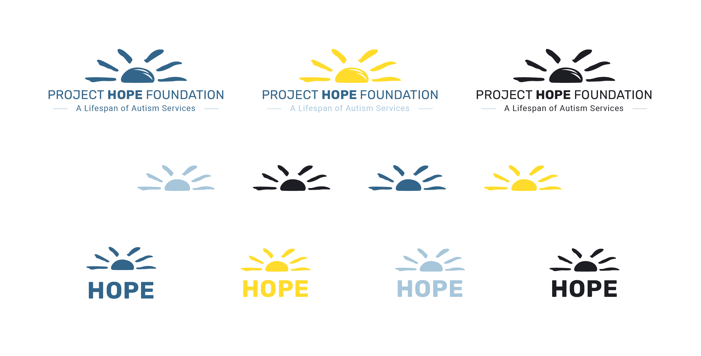

<!DOCTYPE HTML>
<html lang="en">
	<head>
		<title>Process Site Template Files</title>
		<meta charset="utf-8" />
		<meta name="viewport" content="width=device-width, initial-scale=1" />
		<link rel="stylesheet" href="assets/css/main.css" />
		<link rel="stylesheet" href="assets/css/custom.css" />
		<link rel="stylesheet" href="https://use.typekit.net/fmq2ycq.css">
	</head>
	<body>

		<!-- Header -->
			<header id="header">
				<a href="index.html" class="logo"><strong>Process Book</strong> | Shelby Parker</a>
				<nav>
					<a href="#menu">Menu</a>
				</nav>
			</header>

		<!-- Nav -->
			<nav id="menu">
				<ul class="links">
					<li><a href="index.html">Home</a></li>
					<li><a href="design-challenge.html">Design Challenge</a></li>
					<li><a href="newresearch.html">Research</a></li>
					<li><a href="goals.html">Audience and Goals</a></li>
					<li><a href="solution.html">Solution</a></li>
				</ul>
			</nav>

		<!-- Main -->
			<section id="main">
				<div class="inner">
					<!-- <div class="image fit">
						
					</div> -->
					<header>
						<h1>Solution</h1>
						<p class="info">Creating two main buttons for the two audiences and determining the brand of the website.</p>
					</header>
					<!-- <p> Project Hope Foundation is a non-profit organization focused towards people of all ages with autism. This organization
					has grown over the years to now have 8 different locations for services in South Carolina. HOPE is an accranem that stands for
					“Help Our Potential Emerge.” This organization was started by two moms with boys that were diagnosed with autism in 1996. The rate of
					autism in kids was 1 in 2,500 and both of these women had a son with the diagnosis. They knew their boys needed some extra help to succeed
					and they began the mission to create an organization that will help anyone with autism.</p>
					<p>My client has a strong social media presence. They interact with their followers strongly. Recently, they had a tshirt design
					contest and allowed people to submit their designs to go in the running. They are known strongly by the acreanem HOPE as well as the painted-like
					sunshine as the logo.</p>
					<p>The website for Project Hope Foundation is full of information and imagery, but there is a lack of organization and flow to the
					information they have. The use of photos brings their project to life by assosiating it with real people, but the overlap with text takes
					away from the purpose of the information and the special moments captured in photos.</p>


				</div> -->
				<!-- <p class="info">A style tile is a board of possible colors, layouts, and textures that might be used on the future site created.</p>
					</header> -->
					<h3>Call to Action</h3>
						<p>Project Hope Foundation has to primary audiences, the families looking for their service and people looking to volunteer.
							With this in mind, I believe there should be two main CTAs shown on the home page. For families that desire the services that
							Project Hope provides, they want a quick and easy way to get started.
						<p>The phrase “Enroll Now” stands out to those who are visiting
							the site to get connected to classes. The word enroll is key to inviting the viewer to get started now. Once clicked, there would
							be more information provided so that the viewer knows what they are enrolling in.</p> <p>For the viewers looking to volunteer, the phrase
							“Join the Team” stands out as the button to click to begin the application process. Once the user clicks the CTA, they will be
							provided with the different opportunities with brief descriptions that lead to the application in the selected area of service.</p>
						<ul class="actions">
							<li><a href="#" class="button fit">ENROLL NOW</a></li>
							<li><a href="#" class="button alt fit">JOIN THE TEAM</a></li>
						</ul>
						<header>
							<h3>Style Tile</h3>
						</header>
							<p>The Style Tile aims to determine the direction of branding and ultimate "feel" of the website when a user interacts with it.
							To communicate who Project Hope is and how they want to come across, I determined seven key adjectives to describe the site: educational,
							warm, trustworthy, inviting, safe, friendly, communal. After sufficient research, I developed a "feel" that Project Hope is made of and
							desires to display to the community. Next after the adjectives, the typeface needed to be determined. The typefaces used are key to
							how the user feels when entering the website. I chose Rubik SemiBold for the headings and Roboto Medium for the subheadings. These two
							typefaces interact with the user providing a warm and safe environment to enter a world that provides services to those with autism.</p>
							<p>Colors lend emotions to the user as they experience different emotions. I chose to rebrand the color palette for Project Hope, but in
							this process I chose to keep the main yellow they had previously. Replacing the harsh red they had as their primary color, I chose a cool blue
							complimented with a soft, baby blue. These two blues give a feeling of a safe and educational environment for the user. </p>
							<div class="image fit">
								
							</div>
							<header>
								<h3>Logo Variations</h3>
							</header>
							<p>In alignment with Project Hope's original logo, there is a sunshine that I have chosen to use as a watermark for the organization.
							I designed a few variations of the logo that will continue to morphe until I finalize it for the final project. </p>
							<div class="image fit">
								
							</div>
			</section>


		<!-- Footer -->
			<footer id="footer">
				<div class="copyright">
					&copy;2020 Shelby Parker
				</div>
			</footer>

		<!-- Scripts -->
			<script src="assets/js/jquery.min.js"></script>
			<script src="assets/js/jquery.scrolly.min.js"></script>
			<script src="assets/js/skel.min.js"></script>
			<script src="assets/js/util.js"></script>
			<script src="assets/js/main.js"></script>

	</body>
</html>
